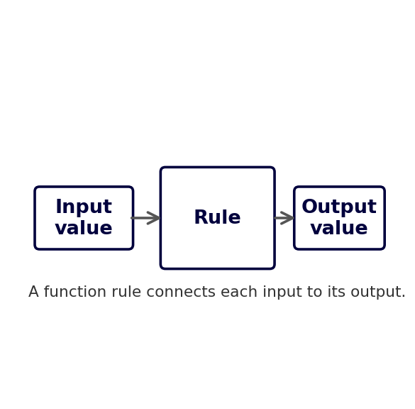
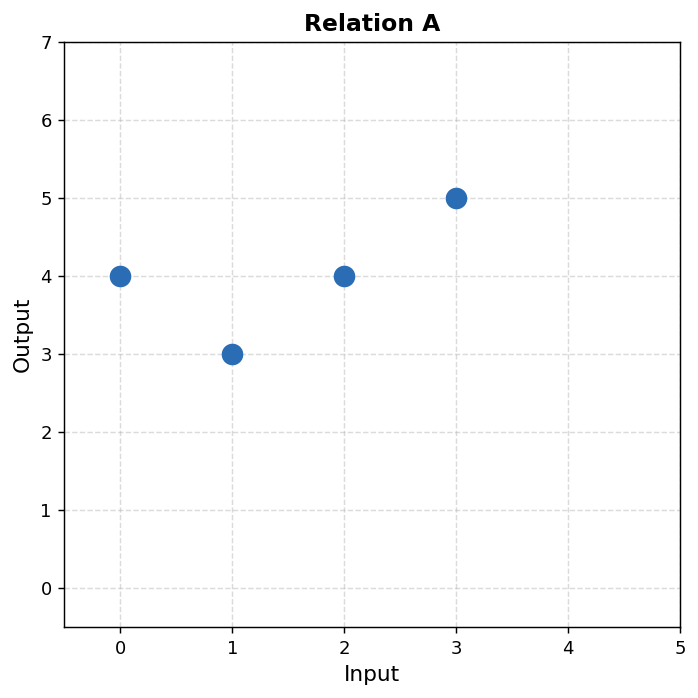
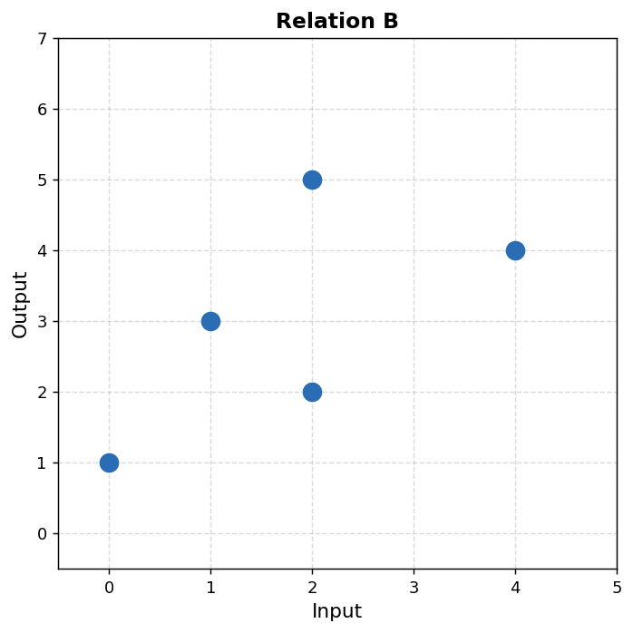

Mathematical idea: A function is not just an equation. It is a dependable connection between inputs and outputs — one input goes in, one output comes out.
Today we will practice interpreting inputs and outputs, evaluating function rules, comparing rules, and deciding whether a relation behaves like a function.
Students will interpret functions as rules that connect inputs and outputs without relying on formal domain and range language.
I can statements
This is a long-range preview for future lessons. Do not solve it today. Instead, annotate it individually. Circle anything familiar, underline symbols or directions that seem important, and write notes about what information you think will be needed later.
As you annotate, ask yourself: Which rule would you trust most? What evidence is missing? What new input would help test the rules?
Future Task — Competing Rules Investigation
A school app gives students points for completing daily math practice. The table shows the points for the first few days.
| Day ($d$) | 0 | 1 | 2 |
|---|---|---|---|
| Total points ($P$) | 2 | 5 | 8 |
Three students propose possible rules.
The rule is $P=3d+2$ because the points increase by 3 each day.
The app adds 3 points most days, but gives a hidden bonus after several days.
The app uses a rule that matches the first three outputs but changes later.
The outputs for days 3, 4, and 5 are hidden.
Directions
Read the introduction aloud with a partner or in a small group. As you read, annotate the text by highlighting important ideas, circling key vocabulary, and writing short notes about connections, questions, or predictions in the margins.
A function is a special kind of relationship. It connects each input to exactly one output. You can think of a function like a machine: a value goes in, the rule does something to it, and one value comes out.
Inputs and outputs can come from many situations. If the input is the number of hours worked, the output might be total pay. If the input is the number of tickets bought, the output might be total cost. If the input is the day of a challenge, the output might be total points earned.
A function rule can be shown with words, a table, a graph, or notation like $f(x)$. The notation $f(x)$ does not mean multiply $f$ by $x$. It means "the output of the function when the input is $x$."
When we study functions, we ask careful questions. What is the input? What is the output? What does the rule do? Does each input have exactly one output? What does the output mean in the real situation?
Stop and Discuss
A function rule connects an input to an output.
The value that goes into the function. It is often the number you choose or are given.
The process that changes the input into an output.
The value that comes out after the rule is applied.
A relationship where each input has exactly one output.

A weekend bike rental shop charges a one-time helmet fee of \$6 and then \$4 for each hour a bike is rented.
The input is the number of rental hours, $h$. The output is the total cost, $C$.
Student claim: "The rule adds 6."
A mystery function machine produces these input-output pairs.
| Input | 1 | 2 | 4 | 5 |
|---|---|---|---|---|
| Output | 7 | 9 | 13 | ? |
Function notation is a compact way to name a rule and its output.
Important: $f(x)$ does not mean multiplying $f$ times $x$. The letter $f$ is the name of the function.
Two school clubs use different point rules for a reading challenge.
Club A: $A(b)=2b+7$
Club B: $B(b)=5b+1$
Two game apps award coins using these rules.
App H: $H(x)=4x-2$
App K: $K(x)=x+8$
Stop and Discuss
Can two different function rules produce the same output for one input? If that happens, does it prove the rules are the same function? Explain.
A relationship is a function if each input has exactly one output.
A student looks at Relation A and says, "This is not a function because the output 4 repeats."

Use Relation B.

In a real situation, inputs and outputs have meaning.
Context sentence frame: In this situation, the input represents __________ and the output represents __________.
A library reading program gives each student 12 starter points and 4 more points for each book read.
The function rule is $P(b)=12+4b$.
Create a simple real-world situation that could be represented by a function. Your situation should have a starting value and a constant change for each input.
A function connects each input to exactly one output. Inputs, outputs, and rules can be shown with words, tables, graphs, equations, or function notation.
Function notation such as $f(x)$ means "the output of function $f$ when the input is $x$." It does not mean multiplication.
To decide whether a relationship is a function, focus on the inputs. Repeated outputs are okay, but one input cannot have two different outputs.
In context, function rules are strongest when we can explain what the input means, what the output means, and how the output changes as the input changes.
Look back at the future task. Do not solve it yet. Highlight one part that makes more sense now than it did at the beginning. Circle one part that still feels unfamiliar. Write one sentence about what representation you would look at first.